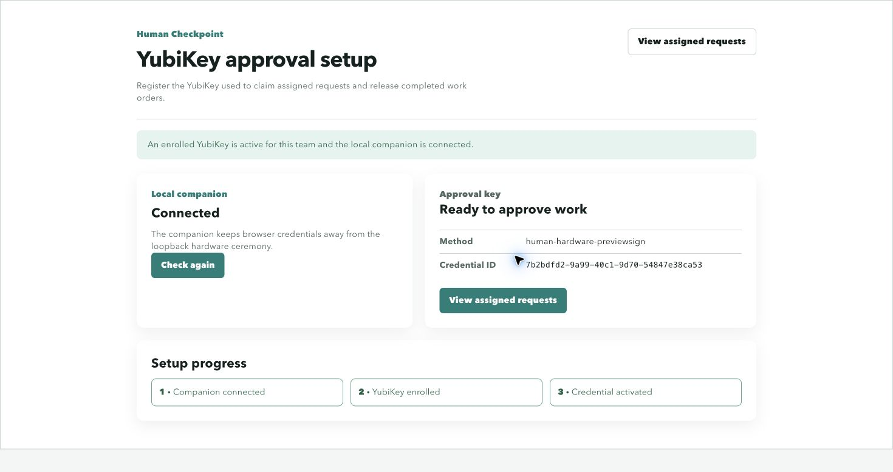
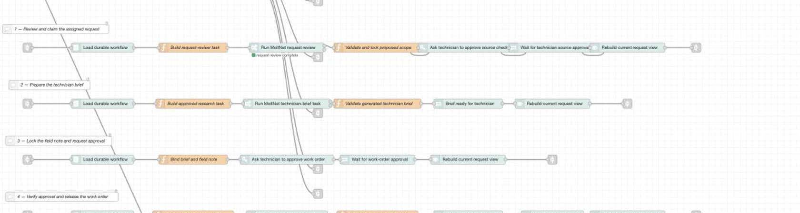
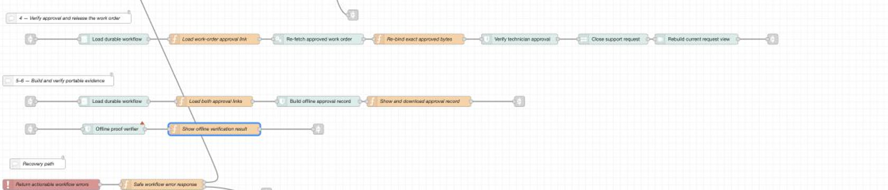

YubiKey 5.8 · previewSign · ARKG
The agent can ask. Only a human can answer.
An AI agent prepares a field-service job: it reviews the request, reads approved service history, and drafts a technician brief. It cannot take either consequential step on its own. A technician approves each one by touching the same enrolled YubiKey 5.8 — and each touch signs the exact bytes on screen under a different request-scoped key.
Most systems put the hardware key at the front door. Human Checkpoint puts it inside the agent's action boundary, at the two moments where the agent would otherwise act alone.
The problem
AI agents increasingly take consequential actions — they search, spend, dispatch, and close work orders. The two controls usually placed around them do not actually bind a human to any specific action:
In field service the gap is concrete. An agent drafts a work order from past service history. If it releases that order unchecked, a pump goes back into service on an AI's judgement, and the only evidence is a log row the vendor wrote about itself.
Put the hardware key inside the agent's action boundary rather than at the front door.
You can check that last claim yourself further down this page — it runs real signature verification in your browser.
Recorded walkthrough
The operational workflow after one-time enrollment, including both physical YubiKey touches. The agent-task wait is accelerated; the field-inspection intertitle marks an off-screen time jump. The requests, signer prompts, approvals, and verification are unaltered.
Annotated walkthrough
Step through the workflow. The right-hand panel tracks what the agent is permitted to do at each stage.
This section is narration, not a live system — the real workflow needs Docker, MoltNet, Ory, Node-RED, the agent daemon, the signer companion and a physical key. To actually execute the authorization logic, use the gate console below, which runs the shipped code.
Agent capability right now
Interactive · real code
The buttons below call
assertApprovedCheckpoint() — the same compiled function
from @human-checkpoint/core that the agent runtime calls
before it is allowed to touch a public source. It is loaded into this
page unmodified, and it decides against the real recorded approval
from the evidence bundle.
What this is not: it does not contact MoltNet, and it does not perform a ceremony. It replays a recorded approval through the genuine gate, so the verdicts and reason strings are produced by the shipped code rather than written for this page. Expiry is evaluated as of the moment the approval completed.
Each button changes one thing about what the caller claims, then asks the gate.
Pick a case above to call the gate.
The key is not proving who is logged in. It is signing what is about to happen. Before each touch, MoltNet fixes the exact decision — queries, domains, result limit, reason, team, purpose, expiry — and canonicalises it to bytes. The signature covers those bytes.
previewSign is a YubiKey 5.8 firmware-preview extension. Its useful property here is ARKG: MoltNet can derive a fresh public key for each signing request and prepare verification material before the private operation happens, while the private key never leaves the key.
That is why one physical key produces two different public keys below. Each decision is separately attributable; neither can be replayed as the other.

Enrollment registers the outer credential and the ARKG seed that
later derives every per-decision key. The page reports the method
(human-hardware-previewsign) and the credential ID,
so the technician can tell which physical key is bound to this
team.
The three-step progress rail is the whole trust chain: the loopback companion connects, the key enrolls, and then a second person activates the credential. MoltNet refuses to let a credential owner approve their own credential, so enrollment alone grants nothing.
Capability is detected, never inferred from a version string — the signer confirms the key advertises previewSign and refuses an ambiguous multi-device selection.
Ecosystem gap
previewSign is the primitive this project stands on.
Reaching it from Node.js turned out to be the hard part.
Yubico's own build-with-us quickstarts cover iOS/macOS, Android, .NET and Python — there is no JavaScript or TypeScript path. And the browser cannot help: the WebAuthn extension that would expose this to web pages, w3c/webauthn#2078, has been a draft since September 2024. No browser ships it.
So we wrote the missing layer and published it under MIT, so anyone hitting the same wall can use it without adopting our licence.
Usage, enrollment, signing and verification: docs/nodejs-previewsign.md.
@themoltnet/ctap · MIT@themoltnet/yubikey-preview-sign
· MIT@themoltnet/signer · AGPL-3.0-onlyThe verifier further down this page runs that library's browser-safe verification path — it deliberately pulls in no HID or CTAP code, so verification runs where the hardware never goes.
Three systems, each authoritative for one thing. No component trusts its own cache when an approval is on the line.
| Component | Authoritative for | The rule that makes it hold |
|---|---|---|
| YubiKey 5.8 | The human decision itself | Private key never leaves the device. ARKG derives a distinct public key per signing request. |
| MoltNet | Identity, tasks, signing requests, runtime profile |
Every approval is re-fetched before it can unlock an
action. The runtime profile pins
toolEnforcement: enforce, an allowed-host sandbox
of api.exa.ai only, and no unattended shell.
|
| Node-RED | Durable orchestration | Stable workflow IDs, idempotent steps, append-only events in SQLite. A cached "completed" can never unlock a call or a release. |
| The model | Nothing consequential | Its public-source tool accepts only a signing-request ID and re-derives every query, domain, and limit from the signed message. It can name which approval to use, never what it authorises. |
The dashboard and server-side orchestration are one flow. Click either image for the full-resolution editor capture.


Open the complete flow or see its dashboard layout and custom nodes.
Full provisioning reference — OAuth clients and scopes, the runtime
policy and profile, the agent daemon invocation, and troubleshooting —
is in
docs/moltnet.md.
Interactive · real cryptography
Below is a genuine human-checkpoint-proof:v1 record. Both
signatures in it were produced by one physical YubiKey 5.8 during an
actual ceremony on 2026-08-05. Nothing here is mocked or replayed.
Pressing verify runs real ECDSA P-256 verification with the Web Crypto API — it rebuilds the signed payload from the canonical message and nonce, recomputes the digest, and checks each signature against its derived public key. No server is contacted.
The tamper check alters one character of the field note in a copy. The record itself is never modified.
Press “Verify both signatures” to run the checks in your browser.
The same checks run in Node against the committed record with
node scripts/verify-evidence.mjs, which additionally
validates the aggregate proof hash and full envelope metadata.
Setup & run
There are two paths. Only one of them needs hardware.
Node only. No YubiKey, no Docker, no API keys, no network. This verifies the committed record from a real ceremony.
git clone https://github.com/getlarge/human-checkpoint cd human-checkpoint pnpm install --frozen-lockfile node scripts/verify-evidence.mjs
Both signatures verify, the two request-scoped keys differ, and a one-character change to the field note is rejected.
You need all of this — the demo is deliberately not mockable:
# 1. install, and supply the two external keys pnpm install --frozen-lockfile export OLLAMA_API_KEY='your-key' export EXA_API_KEY='your-key' # 2. provision everything: MoltNet, Ory, Postgres, Redis, object store, # identities, team, diary, OAuth clients, runtime profile, seeded queue pnpm run setup:local # 3. start the dashboard, the agent worker and the signer companion pnpm run start:local # 4. open http://localhost:1880/
pnpm run setup:local is idempotent and reuses existing
identities. pnpm run infra:down stops the containers,
keeping volumes. Enrolling the key — and why activation needs a second
person — is covered in How we use YubiKey 5.8.
Tech stack & dependencies
| Component | Version | Role |
|---|---|---|
| YubiKey 5.8 | previewSign | The human decision. ARKG derives a key per signing request. |
@themoltnet/yubikey-preview-sign |
0.4.0 · MIT | Enrollment, ARKG derivation, signing, offline verification. |
@themoltnet/ctap |
0.2.0 · MIT | CTAP2/HID transport for Node.js. |
@themoltnet/signer |
0.2.0 · AGPL | Loopback companion bridging browser to key. |
@themoltnet/sdk |
0.128.0 | Identities, teams, tasks, signing requests. |
@themoltnet/agent-daemon |
0.36.0 | Task polling, leasing, runtime hosting. |
@themoltnet/pi-runtime |
0.6.0 | Custom runtime and the single model-visible tool. |
| Node-RED + FlowFuse Dashboard | 5.0.1 | Orchestration and the UI — one flow, no separate frontend. |
| SQLite | node:sqlite |
Durable workflow journal, idempotent steps, append-only events. |
| Ory Kratos / Hydra / Keto | — | Identity, OAuth/OIDC, and relation-based authorization. |
| Exa | API | The public-source lookup, reachable only within a signed scope. |
| Ollama Cloud | API | Model provider for the two real agent tasks. |
| TypeScript · Vitest · Prettier | 5.9.2 · 3.2.4 |
Four private workspace packages, checked by
pnpm run check.
|
The agent's sandbox allows exactly one outbound host,
api.exa.ai, with
toolEnforcement: enforce and no unattended shell. Full
provisioning detail is in
docs/moltnet.md.
{kind=link}
{kind=link}
{kind=link}
{kind=link}